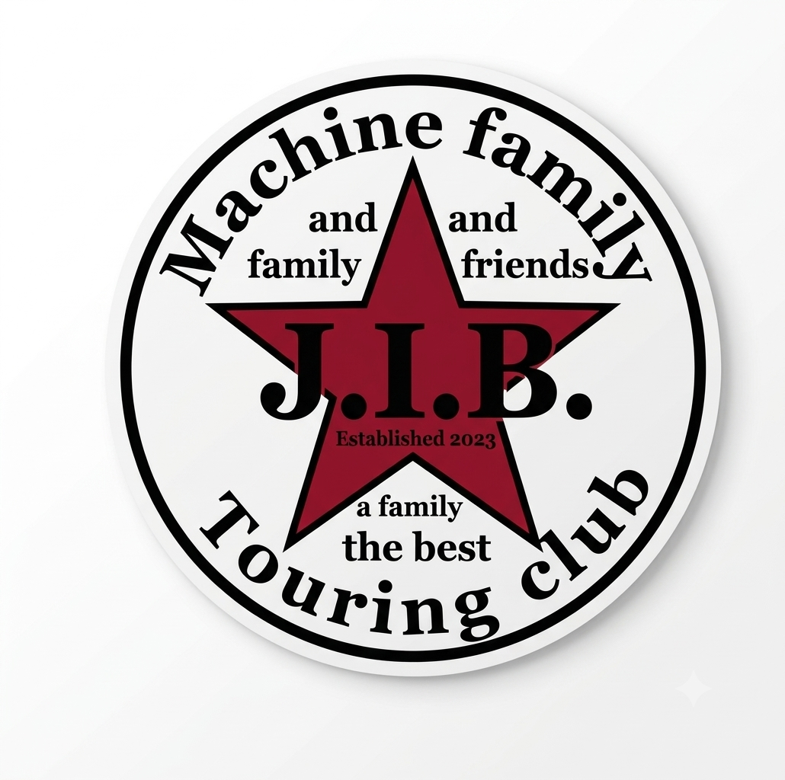

飯塚・カホテラス
4MINI BIKE MEETING IN 2026
4MINIファンによる、4MINIファンのための熱い1日。2St / 4St、オールOKのバイクイベントです。
2026年11月22日（日）
10:00〜15:00
雨天中止／エントリー受付 8:00〜

開催概要・料金
| 会場 | 飯塚カホテラス（芝生広場） |
|---|---|
| 住所 | 福岡県飯塚市（カホテラス） |
| バイクエントリー | 1,000円〜（125cc以下ならOK） 当日乗り付けエントリー可能 |
| 一般入場 | 1人 500円（中学生以下無料） |
| 対象 | 2St / 4St オールOK |
主な内容・企画
- グッズ販売
- カスタム車展示
- 俺達全員チビ乗ダー
- 恒例の20mレース（初心者もベテランも皆で楽しもう）
- ガレージセール！
- 厳選キッチンカー
- 今回のアワード実施
注意事項
駐車場は一般の方との共有になりますので、マナー良くご利用ください。事故等の責任は負いかねます。空ぶかし等の行為は絶対におやめください。マナーを守り楽しい1日にしましょう。
主催・関連団体
ツーリングクラブ JIB（Jack in the box）
過去の開催実績
2025年9月28日（日）開催
会場：カホテラス（福岡県飯塚市）
新会場となって初の開催も多くの4MINIオーナー様・ファンの皆様にご参加いただき、盛況のうちに終了しました。